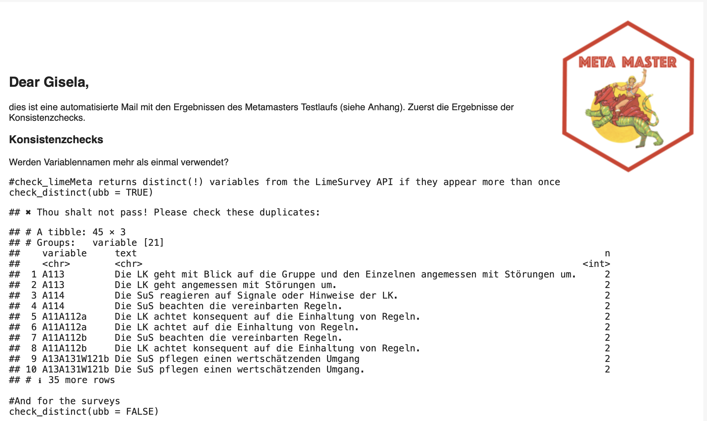

MetaMaster
MetaMaster.RmdThe goal of the MetaMaster package is to create meta data for
LimeSurvey which are reproducible, tested, and, in consequence,
error-free. The package provides functions to retrieve data via the Lime
Survey API (starting with: LS_*); functions to work with a
PostgreSQL (starting with: DB_*) database (Wickham, Ooms, and Müller 2024); and functions
to build the Master Meta Data. Furthermore, the package
implements functions to perform consistency checks and further helpers,
for example, to upload survey templates via the API.
In order to use the package, you must provide credentials and other
parameters that are needed to get access to the Lime Survey API (e.g.,
user name). The MetaMaster packages relies on the conig
packages to get access to these parameters (Allaire 2023). All parameters that are
necessary to retrieve data need to be available in the
config.yml file within the working directory. The next
console shows an example.
default:
tmp.server: "Name"
api_url: "URL"
tmp.user: "user"
tmp.credential: "Password"
test:
tmp.server: "Name"
api_url: "URL"
tmp.user: "user"
tmp.credential: "Password"In case there is no config file yet, run the
create_config() function to create a new one. The function
creates a new config.yml file in the working directory and
adds the default parameters that need to be set for the MetaMaster.
Furthermore, the config package picks the default parameters by default.
To use the configuration for the test environment, set the
environmental variable R_CONFIG_ACTIVE to
test. The master templates for the OES live in the test
environment.
library(MetaMaster)
Sys.setenv(R_CONFIG_ACTIVE = "test")MetaMaster in Action
In order to build the meta data, the following steps are necessary.
(1) We need to download the raw meta data via the Lime Survey API. (2)
We need to build the Master Meta Data based on the raw meta data input.
(3) We need to run consistency checks and may inspect the results in an
email report. (4) We need to upload all tables of the Master Meta data
to the database. The build() function runs the first three
these steps in sequence:
build(send_report = TRUE)
# ℹ Starting the build process...
# ℹ Fetching raw meta data from Lime Survey
# ✔ Raw meta data exported.
# ℹ Building metadata for the master data...
# ✔ MetaMaster exported.
# ℹ Sending the report...
# The email message was sent successfully.
# ✔ By the power of Grayskull: Building process completed.If the Meta Master was built and all checks were passed, the last
step is to update the database. The DB_MetaUpdate() splits
all sheets of the Master Meta data and replaces the database with he new
tables.
The following console shows the steps of the build()
function in action and the next section outlines what happens under the
hood.
#Build the Meta Master Data
build
#> function (send_report = FALSE)
#> {
#> if (!Sys.getenv("R_CONFIG_ACTIVE") == "test") {
#> cli::cli_abort("Please set the environment variable R_CONFIG_ACTIVE to 'test'.")
#> }
#> cli::cli_alert_info("Starting the build process...")
#> cli::cli_alert_info("Fetching raw meta data from Lime Survey")
#> LS_GetMasterData(export = TRUE)
#> cli::cli_alert_info("Building metadata for the master data...")
#> prepare_RawMeta(path = "metadata_raw.xlsx", export = TRUE)
#> if (send_report) {
#> cli::cli_alert_info("Sending the report...")
#> send_Report()
#> }
#> else {
#> cli::cli_alert_warning("Skipping the report send step. To send the report, set send_report = TRUE.")
#> }
#> cli::cli_alert_success("By the power of Grayskull: Building process completed.")
#> }
#> <bytecode: 0x5628471af6c8>
#> <environment: namespace:MetaMaster>MetaMaster Under the Hood
The LS_GetMasterData() function creates the raw meta
data. The function gets all master templates from the LimeSurvey API and
retrieves for each master the survey question, id, so on. The function
returns a tibble or exports the data if the export
parameter is set to TRUE.
#Get the survey questions for the first three master templates
LS_GetMasterData(export = TRUE)
# ✔ Master Data exported. The LS_GetMasterData() is a wrapper function that
combines the LS_GetMasterTemplates() and the
LS_GetMasterQuestions() function. Under the hood, the
LS_GetMasterTemplates() function gets all master templates
from the Lime Survey API first. The function returns a tibble with the
survey id, the survey title, and the template name.
LS_GetMasterTemplates(template = TRUE)
# # A tibble: 95 × 3
# sid surveyls_title template
# <chr> <chr> <chr>
# 1 197865 master_01_bfr_allg_gm_elt_00_2022_v4 tmpl_bfr_allg_gm_elt_00_2022_p1
# 2 197865 master_01_bfr_allg_gm_elt_00_2022_v4 tmpl_bfr_allg_gm_elt_00_2022_p3
# 3 197865 master_01_bfr_allg_gm_elt_00_2022_v4 tmpl_bfr_allg_rs_elt_00_2022_p1
# 4 197865 master_01_bfr_allg_gm_elt_00_2022_v4 tmpl_bfr_beru_ws_elt_00_2022_p1
# 5 943467 master_02_bfr_allg_gm_elt_01_2022_v4 tmpl_bfr_allg_gm_elt_01_2022_p2
# 6 943467 master_02_bfr_allg_gm_elt_01_2022_v4 tmpl_bfr_allg_gm_elt_01_2022_p4
# 7 866667 master_03_bfr_allg_gm_leh_00_2022_v4 tmpl_bfr_allg_gm_leh_00_2022_p1
# 8 866667 master_03_bfr_allg_gm_leh_00_2022_v4 tmpl_bfr_allg_gm_leh_00_2022_p2
# 9 866667 master_03_bfr_allg_gm_leh_00_2022_v4 tmpl_bfr_allg_gm_leh_00_2022_p3
# 10 866667 master_03_bfr_allg_gm_leh_00_2022_v4 tmpl_bfr_allg_gm_leh_00_2022_p4
# # ℹ 85 more rows
# # ℹ Use `print(n = ...)` to see more rowsNext, the LS_GetMasterQuestions() function gets the
survey questions for a specific master template. The function needs the
survey id and the template name as input. The function returns a tibble
with the survey id, the template name, the plot, the variable, the text,
and the filter indicator.
LS_GetMasterQuestions(id = "197865", name = "master_01_bfr_allg_gm_elt_00_2022_v4")
# # A tibble: 29 × 6
# surveyID template plot variable text filter
# <chr> <chr> <chr> <chr> <chr> <chr>
# 1 197865 master_01_bfr_allg_gm_elt_00_2022_v4 E01 B131W124EB13a An dieser Schule… FALSE
# 2 197865 master_01_bfr_allg_gm_elt_00_2022_v4 E01 B132aB13a Mein Sohn/meine … FALSE
# 3 197865 master_01_bfr_allg_gm_elt_00_2022_v4 E01 B132cB13a Die Räume der Sc… FALSE
# 4 197865 master_01_bfr_allg_gm_elt_00_2022_v4 E01 B133bB13a Die Schule ist e… FALSE
# 5 197865 master_01_bfr_allg_gm_elt_00_2022_v4 E02 B334W125aB33a An dieser Schule… FALSE
# 6 197865 master_01_bfr_allg_gm_elt_00_2022_v4 E02 B334W125bB33a Wenn es Konflikt… FALSE
# 7 197865 master_01_bfr_allg_gm_elt_00_2022_v4 E02 B333B33a Mein Sohn/meine … FALSE
# 8 197865 master_01_bfr_allg_gm_elt_00_2022_v4 E03 A632eA063 Mein Sohn/meine … FALSE
# 9 197865 master_01_bfr_allg_gm_elt_00_2022_v4 E03 A633eA063 Mein Sohn/meine … FALSE
# 10 197865 master_01_bfr_allg_gm_elt_00_2022_v4 E03 A631A063 Mein Sohn/meine … FALSE
# # ℹ 19 more rows
# # ℹ Use `print(n = ...)` to see more rowsThe prepare_RawMeta() function convert the raw data into
the Master Meta data. Based on the raw data we build the two most
important tables of the meta data. The templates table contains
information about the master, survey, and the report template that will
be used for the report. And the report table contains information about
the variable, plot, and the text label for each report template.
In addition, the meta data contains information abouts sets, colors,
and further smaller tables which will not(!) be generated automatically.
Let’s revise them with the DB_Table() function. The sets
table contains information about the (color) sets, the labels, and so
on.
sets <- DB_Table("sets")
sets
# # A tibble: 54 × 7
# set code labels sort colors text_color timestamp
# <chr> <chr> <chr> <chr> <chr> <chr> <dttm>
# 1 set01 1 stimmt gar nicht 1 #7b3294 white 2024-11-07 14:32:34
# 2 set01 2 stimmt eher nicht 2 #c2a5cf black 2024-11-07 14:32:34
# 3 set01 3 stimmt zum Teil 3 #f7f7f7 black 2024-11-07 14:32:34
# 4 set01 4 stimmt eher 4 #a6dba0 black 2024-11-07 14:32:34
# 5 set01 5 stimmt ganz genau 5 #008837 white 2024-11-07 14:32:34
# 6 set01 6 weiß nicht 6 #d0cece black 2024-11-07 14:32:34
# 7 set03 1 gar nicht zufrieden 1 #7b3294 white 2024-11-07 14:32:34
# 8 set03 2 eher nicht zufrieden 2 #c2a5cf black 2024-11-07 14:32:34
# 9 set03 3 eher zufrieden 3 #a6dba0 black 2024-11-07 14:32:34
# 10 set03 4 sehr zufrieden 4 #008837 white 2024-11-07 14:32:34
# # ℹ 44 more rowsThe set_data table contains information about plot and the set name.
set_data <- DB_Table("set_data")
set_data
# plot set timestamp
# <chr> <chr> <dttm>
# 1 A1 set04 2024-11-07 14:32:34
# 2 A11 set01 2024-11-07 14:32:34
# 3 A12 set01 2024-11-07 14:32:34
# 4 A13 set01 2024-11-07 14:32:34
# 5 A1a set05 2024-11-07 14:32:34
# 6 A1b set16 2024-11-07 14:32:34
# 7 A1c set16 2024-11-07 14:32:34
# 8 A2 set04 2024-11-07 14:32:34
# 9 A21 set01 2024-11-07 14:32:34
# 10 A22 set01 2024-11-07 14:32:34
# # ℹ 133 more rows
# # ℹ Use `print(n = ...)` to see more rowsThese tables are smaller and there is no need to create them
automatically, but this not mean that errors in these tables will not
affect the reporting. The MetaMaster comes with several
check_* function for this case. The
check_manualmeta() function checks this data before these
tables can be updated on the data base.
And in a similar sense, we can also run consistency check for the
Meta Master data. For this purpose the build() function
runs the LS_survey_checks* functions. More precisely, the
functions are included in the email template and run automatically if
you set the send_report parameter to TRUE. The
next image shows a preview of the email.

Under the hood, the blastula package is used to create the email
(Iannone and Cheng 2024). The email shows
the results of the consistency checks and includes the MetaMaster data
as an attachment. The email is sent to the email address that is set in
the config.yml file if you provide the mail crendentials in
the working.
Don’t forget that the last step is to update the database, which is
included in the build() function by purpose since it will
replace all tables of the master data. The DB_MetaUpdate()
splits all sheets of the Master Meta data and replaces the database with
he new tables.
Further Helpers
The MetaMaster contains further helper functions to work with the LimeSurvey API.
Sent
The LS_SendSurvey() function sends a survey template to
Lime Survey. The function needs the path to the survey template and the
name of the survey template. It expects the survey template to be in the
LimeSurvey LSS format.
LS_SendSurvey(lss = "limesurveyMod.lss",
name = "mastertemplate")The LS_SendSurveys() function is a wrapper around
LS_SendSurvey(). It sends all survey templates in the
working directory to Lime Survey.
Delete
The LS_DeleteSurvey() function deletes a survey from
LimeSurvey. The function needs the survey ID of the survey template. Be
careful, there is no way to restore a deleted survey.
LS_DeleteSurvey(sid = "123456")Create Test Scenarios
The create_TestSchools() function creates test scenarios
for the MetaMaster. The function creates for each master template a test
school. The function returns a tibble with the survey id, the survey
title, the template name, the school, the new name, the snr, and the
test school.
create_TestSchools()
# # A tibble: 38 × 8
# sid surveyls_title template file school new_name snr test_school
# <int> <chr> <chr> <chr> <chr> <chr> <chr> <chr>
# 1 197865 master_01_bfr_allg_gm_elt_00_20… tmpl_bf… NA gm bfr_all… 8934 8934_20242…
# 2 943467 master_02_bfr_allg_gm_elt_01_20… tmpl_bf… NA gm bfr_all… 8934 8934_20242…
# 3 866667 master_03_bfr_allg_gm_leh_00_20… tmpl_bf… NA gm bfr_all… 8934 8934_20242…
# 4 383484 master_04_bfr_allg_gs_elt_00_20… tmpl_bf… NA gs bfr_all… 1208 1208_20242…
# 5 687118 master_05_bfr_allg_gs_elt_01_20… tmpl_bf… NA gs bfr_all… 1208 1208_20242…
# 6 661758 master_06_bfr_allg_gs_leh_00_20… tmpl_bf… NA gs bfr_all… 1208 1208_20242…
# 7 386673 master_07_bfr_allg_gs_sus_00_20… tmpl_bf… NA zspf_… bfr_zsp… 6009 6009_20242…
# 8 956526 master_08_bfr_allg_gs_sus_02_20… tmpl_bf… NA zspf_… bfr_zsp… 6009 6009_20242…
# 9 533711 master_09_bfr_allg_gy_elt_00_20… tmpl_bf… NA beru_… bfr_ber… 0850 0850_20242…
# 10 197211 master_10_bfr_allg_gy_elt_01_20… tmpl_bf… NA gy bfr_all… 0001 0001_20242…